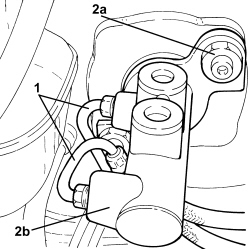

3330C10 MASTER CYLINDER (PUMP) - R + R
- Path
- Procedures > 33 BRAKES > 3330 HYDRAULIC BRAKING SYSTEM > 3330C BRAKE PUMP, RESERVOIR AND LOAD PROPORTIONING VALVE > 3330C10 MASTER CYLINDER (PUMP) - R + R
- Kind
- repair procedure (removal / refitting; the operation number is the code)
- Applies to
- all engines; all production periods
- Interactive page
- https://sloeber94.github.io/elrnDB-aBrrSpdr/en/#/946002132
Applies to: all engines; all production periods
 Removing
Removing
 Refitting
RefittingOp. 3330C30 BRAKE FLUID RESERVOIR - R + R AND WASH INSIDE
1. Disconnect the connectors and remove the two pipes from the brake pump.
2. Undo the nuts (2a) and remove the brake pump (2b) from the brake servo.

Applies to: all engines; all production periods
Refitting
Removing- Place the brake pump in its housing with new seals and secure it by tightening the nuts.